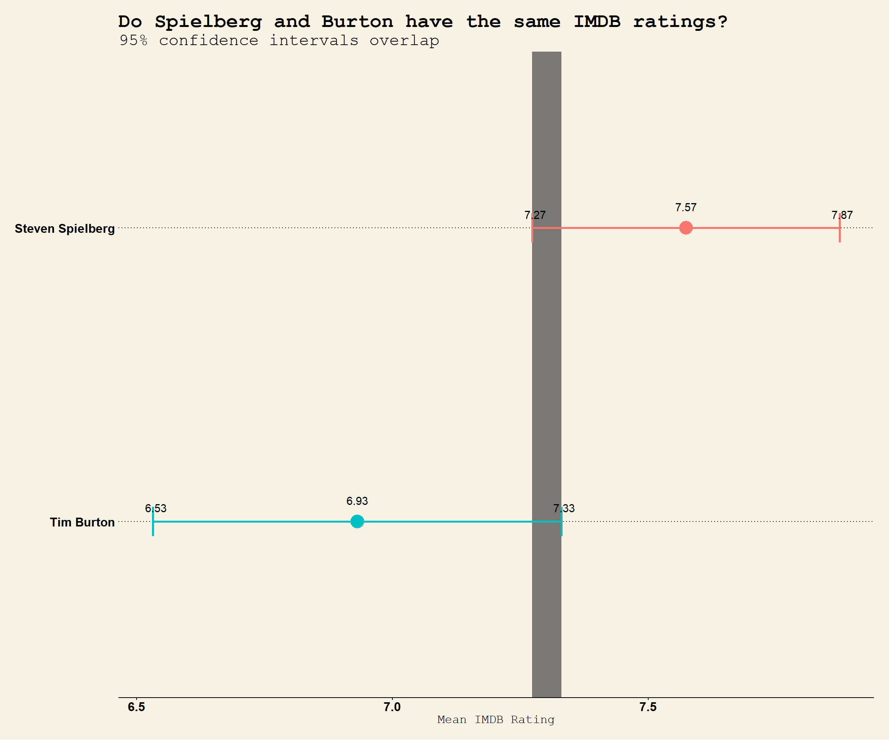
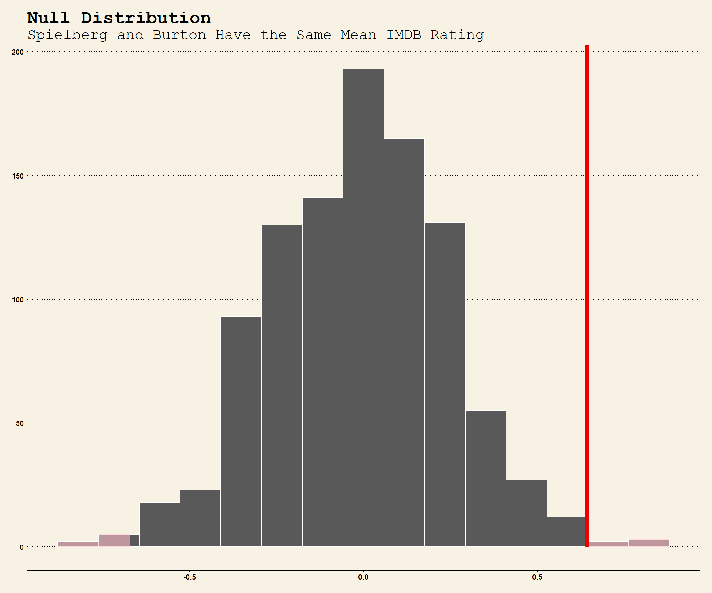

We explore whether the true mean IMDB rating for Steven Spielberg and Tim Burton are the same or not. As we can see according to the following graph, the confidence intervals for the mean ratings of these two directors overlap.
Before anything, write down the null and alternative hypotheses, as well as the resulting test statistic and the associated t-stat or p-value. At the end of the day, what do you conclude?
We load the data and examine its structure.
movies <- read_csv(here::here("data", "movies.csv"))
glimpse(movies)## Rows: 2,961
## Columns: 11
## $ title <chr> "Avatar", "Titanic", "Jurassic World", "The Ave...
## $ genre <chr> "Action", "Drama", "Action", "Action", "Action"...
## $ director <chr> "James Cameron", "James Cameron", "Colin Trevor...
## $ year <dbl> 2009, 1997, 2015, 2012, 2008, 1999, 1977, 2015,...
## $ duration <dbl> 178, 194, 124, 173, 152, 136, 125, 141, 164, 93...
## $ gross <dbl> 7.61e+08, 6.59e+08, 6.52e+08, 6.23e+08, 5.33e+0...
## $ budget <dbl> 2.37e+08, 2.00e+08, 1.50e+08, 2.20e+08, 1.85e+0...
## $ cast_facebook_likes <dbl> 4834, 45223, 8458, 87697, 57802, 37723, 13485, ...
## $ votes <dbl> 886204, 793059, 418214, 995415, 1676169, 534658...
## $ reviews <dbl> 3777, 2843, 1934, 2425, 5312, 3917, 1752, 1752,...
## $ rating <dbl> 7.9, 7.7, 7.0, 8.1, 9.0, 6.5, 8.7, 7.5, 8.5, 7....We then recreate the plot above, using theme_wsj (we use this theme throughout this assignment).
#PREPPING DATA FOR PLOT
movies1 <- movies %>%
group_by(director) %>%
filter(director %in% c("Steven Spielberg", "Tim Burton")) %>%
summarise(mean = mean(rating, na.rm = TRUE),
sd = sd(rating, na.rm = TRUE),
count= n()) %>%
mutate(se = sd / sqrt(count),
lower_ci = mean - qt(1 - (0.05 / 2), count - 1) * se,
upper_ci = mean + qt(1 - (0.05 / 2), count - 1) * se)
movies1## # A tibble: 2 x 7
## director mean sd count se lower_ci upper_ci
## <chr> <dbl> <dbl> <int> <dbl> <dbl> <dbl>
## 1 Steven Spielberg 7.57 0.695 23 0.145 7.27 7.87
## 2 Tim Burton 6.93 0.749 16 0.187 6.53 7.33#PREPPING DATA FOR LATER ANALYSIS
movies_dir <- movies %>%
filter(director %in% c("Steven Spielberg", "Tim Burton"))
movies_dir## # A tibble: 39 x 11
## title genre director year duration gross budget cast_facebook_l~ votes
## <chr> <chr> <chr> <dbl> <dbl> <dbl> <dbl> <dbl> <dbl>
## 1 E.T.~ Fami~ Steven ~ 1982 120 4.35e8 1.05e7 2811 281842
## 2 Jura~ Adve~ Steven ~ 1993 127 3.57e8 6.30e7 2129 613473
## 3 Alic~ Adve~ Tim Bur~ 2010 108 3.34e8 2.00e8 79957 306320
## 4 Alic~ Adve~ Tim Bur~ 2010 108 3.34e8 2.00e8 79957 306336
## 5 Indi~ Acti~ Steven ~ 2008 122 3.17e8 1.85e8 14959 333847
## 6 Jaws Adve~ Steven ~ 1975 130 2.60e8 8.00e6 2047 412454
## 7 Batm~ Acti~ Tim Bur~ 1989 126 2.51e8 3.50e7 2725 269033
## 8 Raid~ Acti~ Steven ~ 1981 115 2.42e8 1.80e7 12906 661017
## 9 War ~ Adve~ Steven ~ 2005 116 2.34e8 1.32e8 12758 334345
## 10 The ~ Acti~ Steven ~ 1997 129 2.29e8 7.30e7 1635 278362
## # ... with 29 more rows, and 2 more variables: reviews <dbl>, rating <dbl>#PLOTTING DATA
ggplot(movies1,
aes(x=mean,
y=reorder(director, mean))
) +
#adding mean as points
geom_point(aes(color = director,
size = 3)
) +
#add grey rectangles for overlap
geom_rect(aes(xmin=max(lower_ci),
xmax=min(upper_ci),
ymin = -Inf,
ymax = +Inf,
alpha = .3)
)+
#add errorbars
geom_errorbar(aes(xmin = lower_ci,
xmax = upper_ci,
width = 0.1,
color = director,
size = 1.5)
)+
#labels
labs(title = "Do Spielberg and Burton have the same IMDB ratings?",
subtitle = "95% confidence intervals overlap",
y = "",
x = "Mean IMDB Rating"
)+
#theme wsj, scaling text size
theme_wsj(base_size = 8) +
#adding values on confidence interval
geom_label(aes(y=reorder(director,mean),
x=lower_ci,
label = round(lower_ci,2)),
hjust=0.4,
vjust=-0.4,
fill = NA,
label.size = NA
)+
#adding values on confidence interval
geom_label(aes(y=reorder(director,mean),
x=upper_ci,
label = round(upper_ci,2)),
hjust=0.4,
vjust=-0.4,
fill = NA,
label.size = NA
)+
#remove legend
theme(legend.position = "none")+
#add mean as text
geom_text(aes(label=round(mean,2),
vjust =-2)
) +
theme(
axis.text.x = element_text(size = 12), #denotes x-axis ticks
axis.text.y = element_text(size = 12), #denotes y-axis ticks
axis.title.x = element_text(size = 12)
) 
Finally, we perform a hypothesis test, using two methods. First, using the t-test, and second by simulating data with the infer package.
# hypothesis testing using t.test()
t.test(rating~director, data=movies_dir)##
## Welch Two Sample t-test
##
## data: rating by director
## t = 3, df = 31, p-value = 0.01
## alternative hypothesis: true difference in means is not equal to 0
## 95 percent confidence interval:
## 0.16 1.13
## sample estimates:
## mean in group Steven Spielberg mean in group Tim Burton
## 7.57 6.93# initialise the test
movies_obs_diff <- movies_dir %>%
specify(rating ~ director) %>%
calculate(stat = "diff in means", order = c("Steven Spielberg","Tim Burton"))
# hypothesis testing using infer package (details in lec slide58, 61, also the question1)
# simulate the null hypothesis
movies_null_diff <- movies_dir %>%
specify(rating ~ director) %>%
hypothesise(null="independence") %>% #hypothesis of no difference
generate(reps = 1000, type = "permute") %>%
calculate(stat="diff in means", order = c("Steven Spielberg","Tim Burton"))
# visualise the distribution and check the p-value
movies_null_diff %>%
visualise()+
shade_p_value(obs_stat = movies_obs_diff, direction = "two-sided") +
theme_wsj(base_size = 9) +
labs(title = "Null Distribution",
subtitle = "Spielberg and Burton Have the Same Mean IMDB Rating",
y = "Count",
x = ""
)
# calculate the p-value
movies_null_diff %>%
get_p_value(obs_stat = movies_obs_diff, direction = "two-sided")## # A tibble: 1 x 1
## p_value
## <dbl>
## 1 0.01Given that our 95% Confidence Intervals overlap (as seen in the graph), would like to understand whether the mean IMDB ratings for Steven Spielberg and Tim Burton could be identical or not. Therefore, we begin with the null hypothesis: there is no difference between each director’s mean IMDB rating. The alternative hypothesis is that there is a difference between their mean IMDB ratings
We use two methods to investigate this null hypothesis.
First, we use the t-test function. From this, we obtain a t-statistic of 2.7144 and a p-value of 0.01078. Given that we obtain a t-stat greater than 2, and a p-value smaller than 5% (which are the usual benchmarks for this kind of analysis i.e. we’re not doing physics here), we can reject the null hypothesis. In other words, there is a significant difference between the mean IMDB ratings of each director, which we cannot ignore.
Second, we use the infer package to simulate data corresponding to the null hypothesis. We then calculate a p-value for our difference in mean rating, given the null distribution. We find that it typically lies between 0.8%-1.4%, which is below the 5% threshold. Thus, we again reject the null hypothesis.